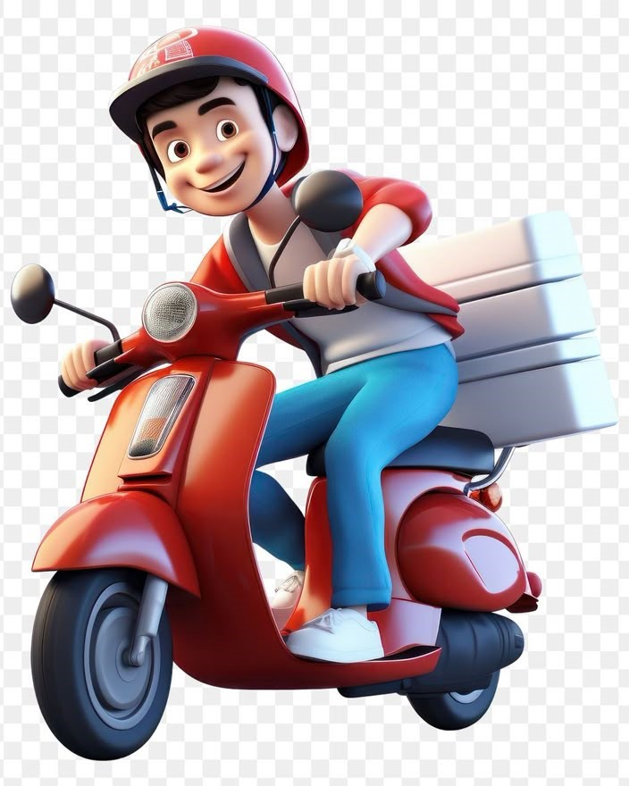

Layanan Kami

Pengiriman Susu Segar
Kami mengantarkan susu segar langsung ke rumah Anda setiap hari dengan kualitas yang terjaga dan rasa alami.

Susu Organik Bersertifikat
Diproduksi dari sapi organik terbaik. Bebas bahan kimia, aman untuk keluarga, dan ramah lingkungan.

Konsultasi Peternakan
Tim ahli kami siap membantu Anda dalam merawat ternak dengan pendekatan edukatif dan dukungan langsung.